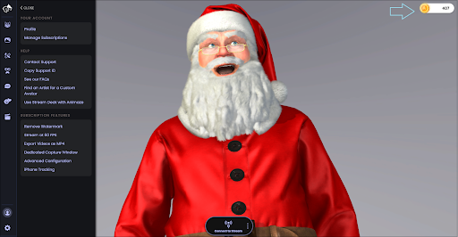
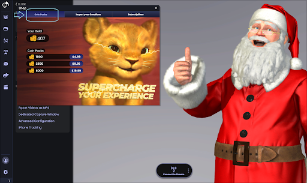

もっとコインを買うにはどうすればよいですか？
1.画面の右上にあるコインのアイコンをクリックします。または、画面の下部のメニューの「ショップ」ボタンをクリックします。

2.「コインパック」タブを開き、利用可能なコインパックから1つ選択します

3.Steam経由で購入を確認できるSteamのオーバーレイが、スクリーン上に表示されます
1.画面の右上にあるコインのアイコンをクリックします。または、画面の下部のメニューの「ショップ」ボタンをクリックします。

2.「コインパック」タブを開き、利用可能なコインパックから1つ選択します

3.Steam経由で購入を確認できるSteamのオーバーレイが、スクリーン上に表示されます